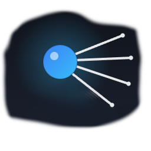

Single accent (#38BDF8), 24×24 grid, 1.7 stroke, round caps — a satellite/orbit signature unifies the set and kills the generic look. All saved as SVG in assets/icons/.
A · БАННЕР ЭКРАНА ВЫБОРА РЕЖИМА — replaces the plain centred text header
ПОСЛЕ

Re:Sputnik
Настройка Re:HomeProxy на роутере OpenWRT
880×300 · cut-out Sputnik mark, blended · orbital backdrop
ДО
Re:Sputnik
Настройка Re:HomeProxy на роутере OpenWRT
Plain centred label — no brand presence, lots of dead space.
B · ИКОНКИ ВЫБОРА РЕЖИМА — replace lightning / gear / box
Пошаговая настройка
Восходящие шаги с финальным узлом — «ведём за руку».
mode_guided.svg
Расширенный
Регуляторы-узлы — свободная навигация и контроль.
mode_advanced.svg
Предустановить пакеты
Загрузка на ПК → передача на роутер для офлайн-установки.
mode_preinstall.svg
Each sits in a 64px chip, radius 16, bg rgba(56,189,248,.10), icon in accent. On hover, lift the chip bg to .16.
C · БИБЛИОТЕКА — section-header & step icons (replace the emoji 🔌🔑🔒📦🔗📄🌐📶)
Подключение
connect
SSH-ключ
key
Пароль
lock
Ядро / ПО
package
Подписка
link
.conf файл
file
Интернет
globe
Точка доступа
wifi
Узлы
nodes
Проверка
verify
Завершение
finalize
zram / память
resource
Section-header chip = 30px, icon 15–16px, accent on rgba(56,189,248,.13). Same SVGs scale to the 9-step rail and the mode cards — one set, three sizes.
Передача в Claude Code (customtkinter)
1
SVG masters live in assets/icons/. stroke=accent, fill=none — recolour by swapping the stroke before raster.
2
customtkinter can't load SVG directly — rasterise to PNG @1x/2x with cairosvg, then CTkImage(light_image=…, size=(24,24)).
3
One render helper: icon("key", 16, "#38BDF8") → cached CTkImage. Build the 9-step rail, mode cards, and section headers from the same call.
4
Banner: banner_hero.svg as a full-width header image; keep the wordmark + subtitle as live labels on top so copy stays editable.